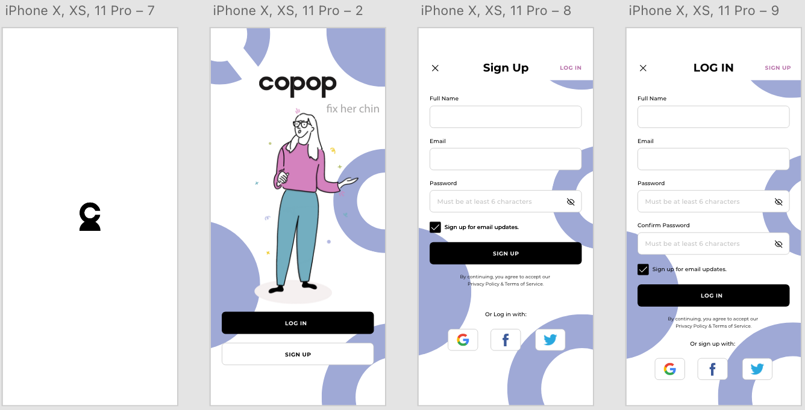
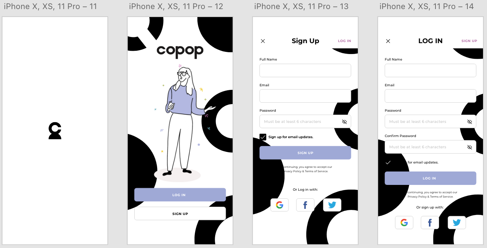
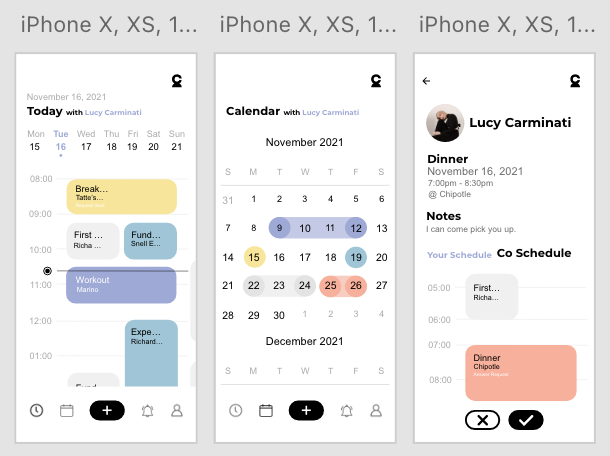
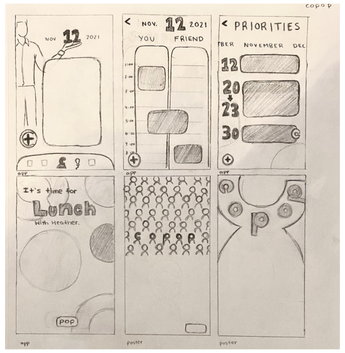
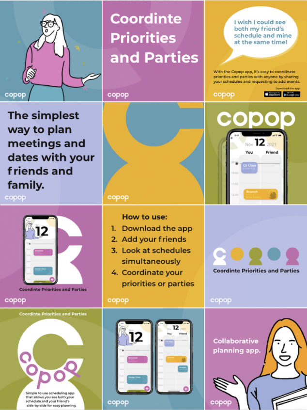
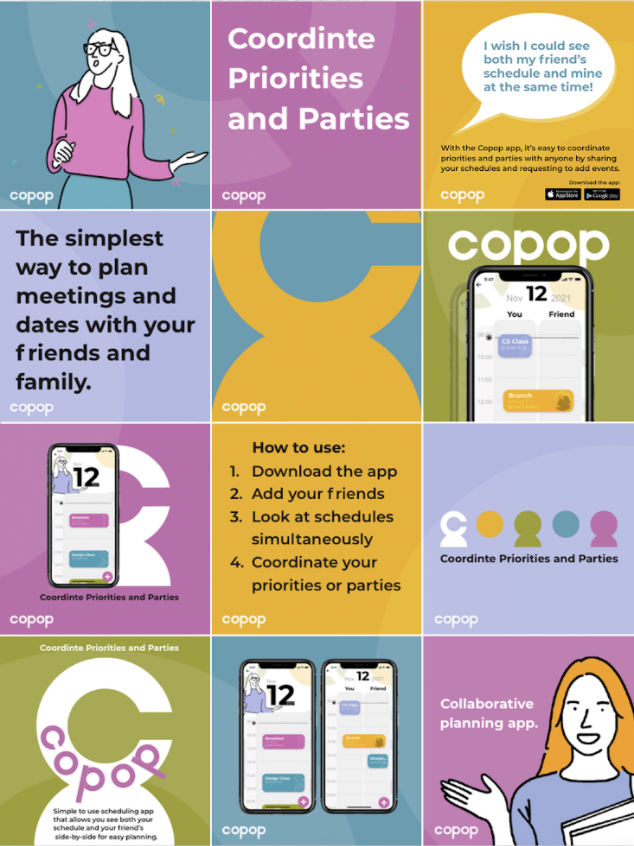

Design
Web
Photography
About Me
Design
Web
Photography
About Me
A schedule sharing app where the user can view both their
schedule and a friends alongside eachother.

This app enables users to share
their calendar/schedules with
their friends and to view both
schedules alongside eachother.
With that, the user is able to
request and recieve requests
from friends to add events that
will be attended together to
both schedules.
Process
Once I joined university and started making connections, I found it hard to effectively plan lunch dates, workouts, and other activities with other people. It was a hassle trying to comparing 4 different schedules to find a time where we could all meet.
I originally did not like all the colors of the first iteration, so I tried to simplify it.
 I thought the design was too bold, so I made a more minimalistic interface.


After receiving feedback, I learned that the previous iteration was too basic and was encouraged to add some of my creativity to the design. With that, I planned on bringing back the playful colors and sketched more interesting interfaces.
To go along with the app, I designed three posters and social media posts to advertise the app.


 
